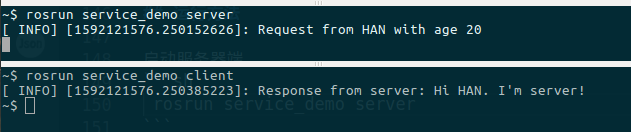

service_demo
在ROS中如何请求或者提供一个服务，我们来看service_demo的代码：一个节点发出服务请求（姓名，年龄），另一个节点进行服务响应，答复请求。
第一步 创建Greeting服务
创建service_demo/srv/Greeting.srv文件，内容包括：
string name #短横线上方部分是服务请求的数据
int32 age
--- #短横线下方是服务回传的内容。
string feedback
现在，你已经如前边所介绍的
在CMakeLists.txt文件中增加了对message_generation的依赖。:
# Do not just add this line to your CMakeLists.txt, modify the existing line find_package(catkin REQUIRED COMPONENTS roscpp rospy std_msgs message_generation )(对的, message_generation 对msg和srv都起作用)
同样，跟msg文件类似，你也需要在CMakeLists.txt文件中做一些修改。查看上边的说明，增加额外的依赖项。
删掉#，去除对下边语句的注释: # add_service_files( # FILES # Service1.srv # Service2.srv # )用你自己的srv文件名替换掉那些Service*.srv文件:
add_service_files( FILES Greeting.srv )在package.xml文件中需要改动
确保它包含以下两条语句:<build_depend>message_generation</build_depend> <exec_depend>message_runtime</exec_depend>- 修改完之后，编译工作空间，生成Greeting.h文件
新生成的Greeting类型的服务，其结构体的风格更为明显。可以这么理解，一个Greeting服务结构体中嵌套了两个结构体，分别是请求和响应：struct Greeting { struct Request { string name; int age; }request; struct Response { string feedback; }response; }
第二步 服务节点代码 server.cpp
// This is the C++ version server file of the service demo
// 加载必要文件，注意Service_demo的加载方式
# include "ros/ros.h"
# include "service_demo/Greeting.h"
# include "string"
// 定义请求处理函数
bool handle_function(service_demo::Greeting::Request &req,
service_demo::Greeting::Response &res)
{
// 此处我们对请求直接输出
ROS_INFO("Request from %s with age %d ", req.name.c_str(), req.age);
// 返回一个反馈，将response设置为"..."
res.feedback = "Hi " + req.name + ". I'm server!";
return true;
}
int main(int argc, char **argv)
{
// 初始化节点，命名为"greetings_server"
ros::init(argc, argv, "greetings_server");
// 定义service的server端，service名称为“greetings”，收到request请求之后传递给handle_function进行处理
ros::NodeHandle nh;
ros::ServiceServer service = nh.advertiseService("greetings", handle_function);
ros::spin();
return 0;
}
在以上代码中，服务的处理操作都写在handle_function()中，它的输入参数就是Greeting的Request和Response两部分，而非整个Greeting对象。通常在处理函数中，我们对Requst数据进行需要的操作，将结果写入到Response中。在roscpp中，处理函数返回值是bool型，也就是服务是否成功执行。不要理解成输入Request，返回Response，但是在rospy中是这样的。
第三步 请求节点代码 client.cpp
//This is client of the service demo
//包含必要文件，注意Service文件的包含方式，我们定义的srv文件为Greeting.srv,
//catkin_make编译之后，生成的头文件Greeting.h
//所以，在包含时需要写成Greeting.h
# include "ros/ros.h"
# include "service_demo/Greeting.h"
int main(int argc, char **argv)
{
// 初始化，节点命名为"greetings_client"
ros::init(argc, argv, "greetings_client");
// 定义service客户端，service名字为“greetings”，service类型为Service_demo
ros::NodeHandle nh;
ros::ServiceClient client = nh.serviceClient<service_demo::Greeting>("greetings");
// 实例化srv，设置其request消息的内容，这里request包含两个变量，name和age，见Greeting.srv
service_demo::Greeting srv;
srv.request.name = "HAN";
srv.request.age = 20;
if (client.call(srv))
{
// 注意我们的response部分中的内容只包含一个变量feedback，
//另，注意将其转变成字符串
ROS_INFO("Response from server: %s", srv.response.feedback.c_str());
}
else
{
ROS_ERROR("Failed to call service Service_demo");
return 1;
}
return 0;
}
以上代码比较关键的地方有两处：一个是建立一个ServiceClient，另一个是开始调用服务。建立client需要用nh.serviceClient
CMakeLists.txt和pacakge.xml修改方法和topic_demo修改方法类似。
第四步 运行方法
启动服务器端
rosrun service_demo server
启动客户端
rosrun service_demo client
